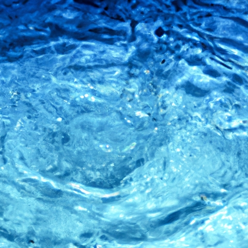

Hydrological Cycle
Hydrological Cycle
Evaporation and transpiration
Condensation and cloud formation
Precipitation and rain patterns
Surface runoff and river systems
Groundwater flow and aquifers
Snowmelt and glacial processes
Water storage in oceans lakes and reservoirs
Soil moisture and infiltration
Water balance and budgeting
Human impact on the hydrological cycle
Marine Ecosystems
Marine Ecosystems
Coral reefs and their biodiversity
Mangrove forests as coastal protectors
Ocean currents and climate regulation
Deepsea habitats and extremophiles
Intertidal zones and estuarine ecosystems
Marine food webs and trophic levels
Freshwater Ecosystems
Freshwater Ecosystems
Conservation efforts for marine species
Marine biogeochemical cycles
Impact of global warming on oceans
Water Resource Management
Water Resource Management
Rivers streams and creeks ecosystems
Lakes ponds wetlands habitats
Biodiversity in freshwater environments
Aquatic plants role in oxygenation
Freshwater fish species diversity
Invasive species impact on freshwater systems
Pollution threats to freshwater sources
Conservation strategies for freshwater biomes
Role of wetlands in flood control
Importance of riparian buffers
Cultural Significance of Water
Cultural Significance of Water
Sustainable water use practices
Desalination technologies for fresh water supply
Wastewater treatment processes
Rainwater harvesting techniques
Management of water during drought conditions
Transboundary water resource politics
Infrastructure for water distribution
Agricultural irrigation efficiency
Urban water demand management
Impact of climate change on water resources
About Us
Contact Us
Water balance and budgeting
Water Quality
Water balance and budgeting refer to the comprehensive analysis and management of water resources within a specific area, ecosystem, or process.
Water balance and budgeting - Droughts
Sustainable Water Use
Drinking Water
Aquifers
Fundamentally, it addresses the equilibrium between water inflows and outflows, ensuring that consumption does not exceed the available supply over a period.
Human impact on the hydrological cycle
. Like fiscal budgeting, where income and expenditures are meticulously tracked to prevent deficits, water budgeting involves monitoring precipitation, surface runoff, infiltration into aquifers, consumption by vegetation through transpiration, and human usage.
The principle behind this concept is straightforward yet critical for sustaining life and ecosystems.
Drinking Water
Precipitation acts as the primary source of natural income in the water budget.
Groundwater
It replenishes rivers, lakes, groundwater reserves (aquifers), and provides moisture necessary for plants and animals.
Molecule
In contrast to monetary funds that can be saved indefinitely if unspent, water cannot be stored without evaporation unless captured in reservoirs or groundwater systems.
Outflows in the water cycle include evapotranspiration – a combination of evaporation from land surfaces and transpiration from plant leaves – which returns moisture to the atmosphere.
Sustainable Water Use
Human activities such as irrigation for agriculture, industrial usage, domestic consumption also represent significant withdrawals from our planet's hydrological account.
To maintain a balanced ledger in hydrosystems requires sophisticated forecasting tools coupled with sustainable management practices. For instance, during droughts or periods of low precipitation policymakers might impose restrictions on usage to conserve dwindling supplies.
Aquifers
Conversely following floods or times when there is an abundance of rainfall measures may be taken to capture excess run-off preventing wasteful overflow beyond what natural basins can accommodate.
In essence maintaining positive water balance involves embracing conservation efficiency recycling technologies while simultaneously protecting restoring ecological habitats that naturally store filter purify supplies.
Water balance and budgeting - Molecule
Droughts
Sustainable Water Use
Drinking Water
It necessitates collaboration among meteorologists engineers urban planners agriculturalists policymakers citizens alike all striving towards judicious stewardship of this indispensable resource.
Water Quality
Conclusively understanding implementing effective strategies for balancing budgeting our freshwater assets remains essential amidst growing global populations climate volatility ensuring sufficient quantities high-quality H2O future generations depends collective commitment wisdom today's decision-makers caretakers environment.

Glaciers and Ice Caps
Hydrological Cycle
Check our other pages :
Role of wetlands in flood control
Water balance and budgeting
Importance of riparian buffers
Rivers streams and creeks ecosystems
Precipitation and rain patterns
Frequently Asked Questions
What is water balance and why is it important?
Water balance refers to the equilibrium between the input and output of water in a system, such as a watershed, an agricultural field, or even the human body. It is important because maintaining a proper water balance ensures that theres enough water for various needs like drinking, irrigation, industry without depleting natural resources or causing environmental harm.
What are some factors that affect local or regional water budgets?
Factors affecting local or regional water budgets include climate variability (changes in precipitation patterns), land use changes (such as urbanization or deforestation), population growth which increases demand for water resources; agricultural practices that may either conserve or expend more water; and policies related to water management.
How does climate change impact the global hydrological cycle and consequently the world’s freshwater supply?
Climate change can alter precipitation patterns leading to droughts in some areas and floods in others. It affects evaporation rates due to temperature rise. Melting glaciers and polar ice caps contribute to sea level rise but reduce long-term freshwater storage in ice form. These changes disrupt the global hydrological cycle potentially leading to scarcity of freshwatersupply in many regions around the world.
What strategies can be employed for sustainable water budgeting at different scales (e.g., municipal vs. individual)?
At a municipal scale, strategies include investing in infrastructure for efficient distribution systems that minimize losses; implementing policies for conservation; recycling wastewater; capturing rainwater; and using pricing mechanisms to encourage responsible usage. On an individual level, people can employ measures such as fixing leaks promptly; installing low-flow fixtures; using drought-resistant plants in landscaping; collecting rainwater for gardening purposes; being mindful about personal consumption habits by taking shorter showers and turning off taps when not needed.